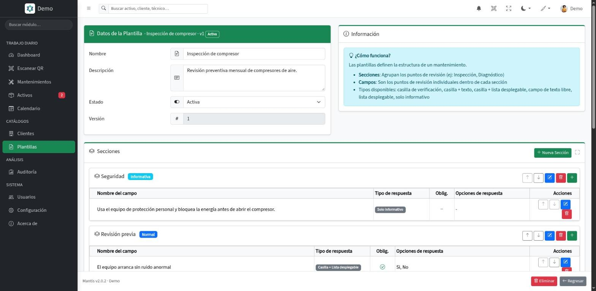
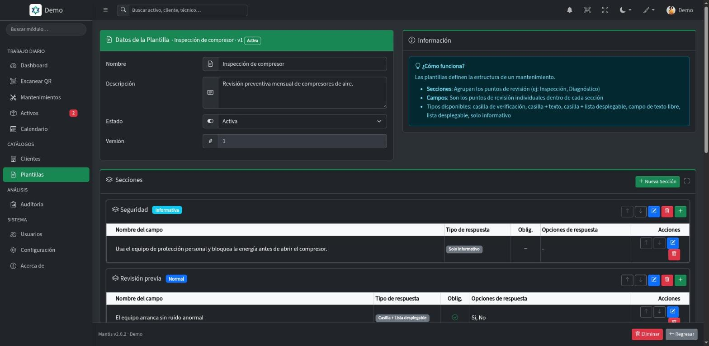
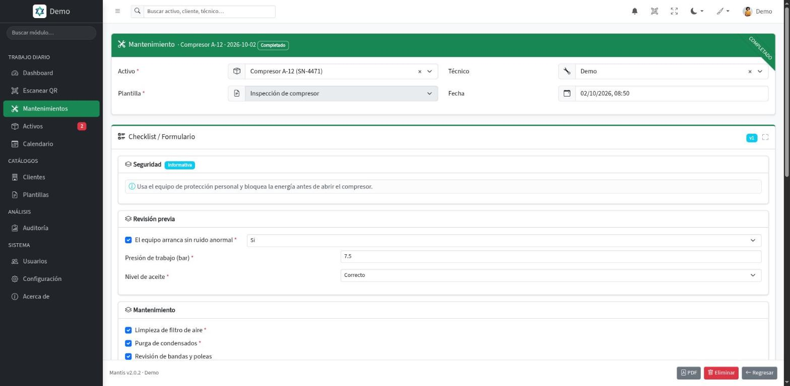
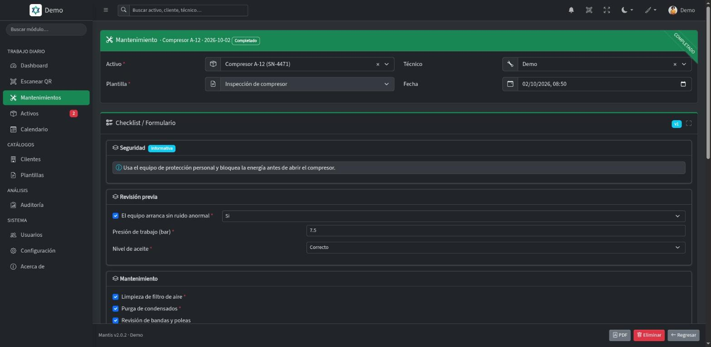
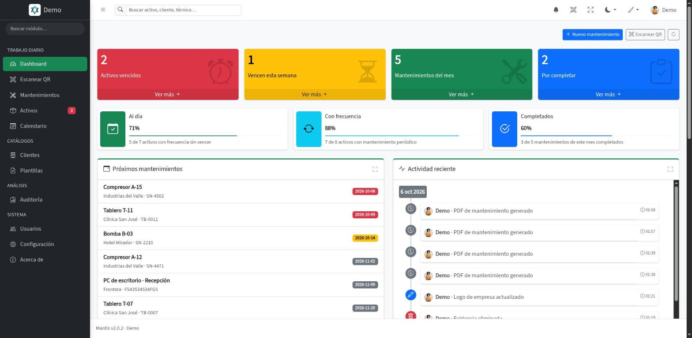
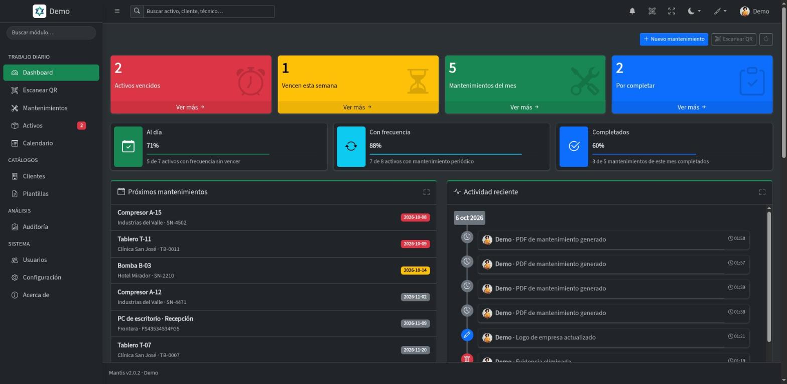
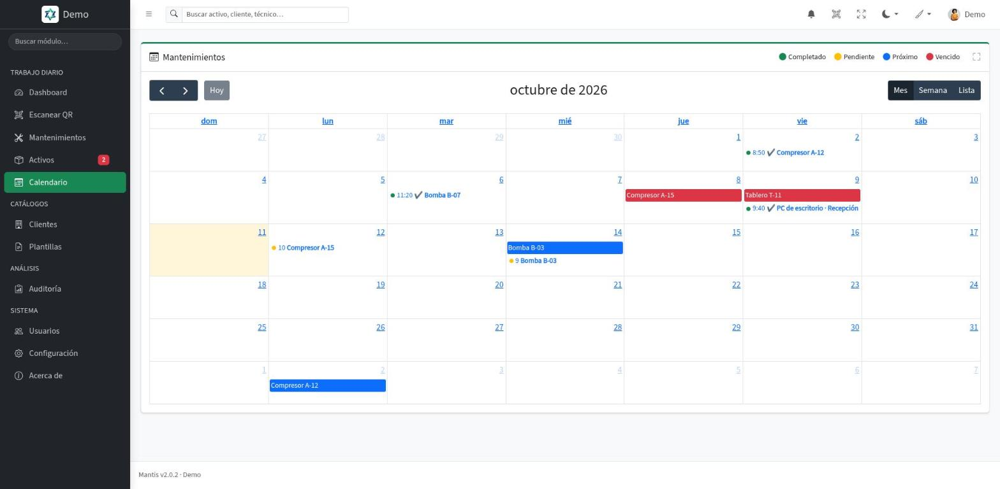
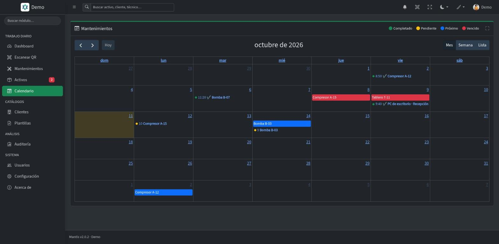

Mantenimiento preventivo y correctivo para áreas de mantenimiento y proveedores de servicio
Ningún mantenimiento vuelve a olvidarse
Planifica, ejecuta y documenta el mantenimiento de equipos e instalaciones, con plantillas checklist a la medida, evidencias fotográficas y trazabilidad de cada intervención. Desde $50 MXN por usuario al mes.
- Plantillas ilimitadas
- Multiempresa
- Auditoría completa
Evidencias multimediaFotos, PDF, documentos y videos en cada mantenimiento.
Qué es Mantis, para quién es y qué resuelve
Qué es
Un sistema de mantenimiento, no una hoja de cálculo
Registras activos, diseñas plantillas checklist y ejecutas mantenimientos con formularios dinámicos que se guardan en tiempo real.
Mantis concentra el mantenimiento de tus equipos en un solo lugar: qué activo toca, quién lo atiende, qué se encontró y qué evidencia queda. Con versionado de plantillas, reporte en PDF para el cliente y auditoría de cada movimiento.
Para quién
Quien da mantenimiento, propio o a terceros
Áreas de mantenimiento internas y proveedores de servicio: jefaturas, supervisores y técnicos de campo que cuidan equipos, maquinaria e instalaciones, propios o de sus clientes.
Qué resuelve
El mantenimiento sin registro
Elimina los mantenimientos olvidados y documenta cada inspección con evidencias y registros listos para auditorías externas.
Capacidades
De la inspección improvisada al proceso estandarizado
Mantis se adapta a tus procesos de mantenimiento específicos, no al revés.
Plantillas
Plantillas a la medida para cada tipo de activo
Diseña plantillas con secciones e ítems configurables. Casillas de verificación, listas desplegables, campos de texto e informativos se combinan para crear el checklist que tu proceso necesita.
- Ítems configurables
Casillas, listas desplegables, texto libre e informativos.
- Versionado de plantillas
Cada cambio incrementa la versión. El historial queda asociado al mantenimiento ejecutado.
- Asociadas al activo
Cada equipo queda ligado a la plantilla de mantenimiento que le corresponde.


Editor de plantillas: secciones e ítems configurables
Ejecución
Ejecución en tiempo real, con evidencia
Ejecuta mantenimientos con formularios dinámicos generados a partir de tus plantillas, desde la computadora o el celular en campo. Al editar, cada respuesta se guarda al instante y el reporte en PDF sale listo para el cliente.
- Evidencias multimedia
Fotos, videos, PDF, Word y Excel: arrástralos, elígelos o pégalos, y revisa las fotos en galería.
- Guardado automático
En un mantenimiento ya registrado, cada cambio se guarda al salir del campo.
- Técnicos de campo
Cada técnico con su usuario: registra a su nombre y completa sus mantenimientos pendientes.


Ejecución de un mantenimiento con guardado automático
Control
El estado de tus activos, en un panel
Activos vencidos y por vencer, mantenimientos del mes y por completar, los próximos servicios y la actividad reciente. La información que necesita quien decide, sin pedirla.
- Indicadores en el panel
Vencidos, por vencer, del mes y por completar, cada uno con acceso directo a su listado.
- Filtros y búsqueda
Un filtro en cada columna de los listados y una búsqueda que recorre activos, clientes, mantenimientos y plantillas.
- Auditoría completa
Quién hizo qué y cuándo, y el historial de cada registro en línea de tiempo.


Panel principal con indicadores de la operación
Seguimiento
Sabes qué toca hoy, y te avisa
Cada activo tiene su frecuencia y Mantis calcula cuándo le toca el siguiente servicio. Lo ves en el calendario y en el tablero, y la campana te avisa de lo que pasa con tus equipos.
- Calendario de mantenimientos
Servicios realizados y próximos en vista de mes, semana o lista; los vencidos, en rojo.
- Tablero por vencimiento
Vencidos, esta semana, al día y sin frecuencia, con un mantenimiento nuevo a un clic.
- Avisos que tú eliges
Asignaciones, mantenimientos completados, notas nuevas y activos vencidos; cada usuario decide cuáles recibe.


Calendario: realizados y próximos de cada activo
Y todo lo que sostiene la operación
Gestión de activos
Equipos, maquinaria e instalaciones con identificador, tipo, ubicación, frecuencia y plantilla asociada, y su hoja de vida imprimible.
Clientes y multiempresa
Los activos de cada cliente agrupados, y tu información aislada de la de cualquier otra cuenta.
Identificación por QR
Cada activo con su código QR: escanéalo con la cámara del celular y abre su ficha al instante.
Roles y permisos
Administrador, supervisor y técnico: cada quien ve y hace solo lo que le corresponde.
Notas en cada registro
Lo que encontraste o lo que falta queda escrito en el activo o el mantenimiento, como una conversación.
Manual dentro del sistema
La ayuda se abre en la pantalla donde estás, con buscador.
Ver todas las capacidades avanzadas
Capacidades avanzadas
Búsqueda en todo el sistema
Escribe un activo, un cliente o un técnico en la barra de arriba, desde cualquier pantalla; solo aparece lo que tú puedes abrir.
Hoja de vida del activo
Sus mantenimientos con su PDF, el historial de cambios en línea de tiempo y sus notas; se imprime como documento con el logo de tu empresa.
Tablas de alto rendimiento
Procesamiento en el servidor con búsqueda, orden y paginación incluso con miles de registros.
Apariencia a tu gusto
Tema claro, oscuro o automático, 20 colores de énfasis y un modo compacto para ver más filas.
Mi perfil y ajustes
Tus datos y tus servicios del mes, cambio de contraseña, cerrar sesión en otros equipos y tus avisos.
Sesiones y contraseñas protegidas
Los permisos de cada rol se revisan en todas las pantallas y listados.
Por qué Mantis
Maximiza la vida útil de tus activos
Diseñado para eliminar los mantenimientos olvidados y documentar cada inspección, para que tu equipo ejecute planes preventivos de forma ordenada y medible.
Lo que ganas y lo que documentas
Mantis convierte cada inspección en un registro
Un plan preventivo programado, checklists uniformes y evidencia en cada servicio: tu equipo previene fallas y deja constancia de lo que hizo.
- Reduce tiempos muertos
Previene fallas con mantenimiento preventivo programado.
- Estandariza procesos
Checklists uniformes para todas las inspecciones.
- Mejora continua
Datos históricos para optimizar frecuencias y procesos.
- Listo para auditorías
Evidencias y registros para auditorías externas.
- Documentación visual
Fotos y archivos adjuntos en cada mantenimiento.
- Decisiones informadas
Indicadores claros en el panel: vencidos, por vencer, del mes y por completar.
Integración con tus procesos
Mantis se adapta a tu forma de trabajar, no al revés.
Plantillas a la medida de tu proceso
Diseñas el checklist de cada tipo de activo con secciones e ítems configurables, y al cambiarlo los mantenimientos anteriores conservan la versión con la que se hicieron.
Un usuario para cada técnico
Cada técnico registra a su nombre y completa sus mantenimientos pendientes, desde el celular en campo o desde la computadora.
Cada rol ve lo suyo
Administrador, supervisor y técnico: los botones de nuevo, guardar y eliminar aparecen solo a quien tiene permiso.
Tu información, separada de la de otras empresas
Tu información queda aislada de la de cualquier otra cuenta, y los activos de cada cliente se agrupan por separado.
La diferencia Mantis
No ofrecemos solo un software, ofrecemos una solución completa a tus necesidades de mantenimiento. Con soporte directo del equipo que lo desarrolla y actualizaciones incluidas, tu inversión evoluciona contigo.
Precios
Un precio por usuario, sin planes
Pagas por cada usuario con cuenta activa, y el precio baja con cada usuario que sumas. Cada usuario incluye hasta 20 activos, plantillas ilimitadas, soporte y las actualizaciones que se publiquen.
Precio por usuario
Desde$50MXN por usuario al mes
Más usuarios, menos pagas por cada uno
- Cada usuario adicional baja 1% el precio de todos tus usuarios.
- Arriba de 50 usuarios, obtienes el descuento máximo de 50%.
- Sin planes ni paquetes. Cada usuario incluye hasta 20 activos.
- Al sumar un usuario se cobra al momento la parte proporcional del periodo. Al reducir tus usuarios contratados, el cobro menor rige desde tu siguiente renovación.
- Con el plan anual solo pagas 10 meses, y los otros 2 son gratis.
- Plantillas ilimitadas
- Hasta 20 activos por usuario
- Soporte y mantenimiento incluidos
- Actualizaciones sin costo adicional
- Sin instalaciones ni servidores propios
- Precios en pesos mexicanos
Preguntas frecuentes
Lo que más nos preguntan sobre Mantis
¿Tienes otra duda? Escríbenos a soporte@alkes.mx.
¿Qué es Mantis?
Un sistema de Alkes para planificar, ejecutar y documentar el mantenimiento preventivo y correctivo de equipos e instalaciones, con plantillas checklist, evidencias y trazabilidad de cada intervención.
¿Cuánto cuesta?
Desde $50 MXN por usuario al mes. Se cobra por usuario con cuenta activa, y cada usuario adicional baja 1% el precio de todos hasta llegar a 50% de descuento arriba de 50 usuarios. Con el plan anual solo pagas 10 meses, y los otros 2 son gratis.
¿Cómo se calcula mi mensualidad?
Todos tus usuarios pagan el mismo precio, que baja con cada usuario que sumas. Con 15 usuarios son 15 × $86 = $1,290 MXN al mes; con 50 usuarios son 50 × $51 = $2,550 MXN al mes. La calculadora de la sección de precios te da el total exacto.
¿Qué pasa si agrego o quito usuarios a mitad del periodo?
Al sumar un usuario se cobra al momento la parte proporcional hasta tu próxima factura, y desde la siguiente el precio por usuario se ajusta a tu nuevo total. Desactivar un usuario libera su lugar para otra persona, pero no cambia el cobro: para pagar menos, reduce tus usuarios contratados en Configuración y la reducción rige desde la siguiente renovación; no hay reembolso a mitad del periodo.
¿Cuántos activos incluye cada usuario?
Cada usuario incluye hasta 20 activos. Las plantillas son ilimitadas y no hay planes ni paquetes: el precio depende solo del número de usuarios con cuenta activa.
¿Qué evidencias puedo adjuntar a un mantenimiento?
Fotos, videos, PDF, Word y Excel. Se arrastran, se eligen o se pegan, y las fotos se revisan en galería.
¿Mis técnicos pueden usarlo en campo?
Sí. Cada técnico entra con su usuario desde el celular o la computadora, registra el mantenimiento a su nombre y escanea el código QR del activo con la cámara.
¿Cómo sé qué mantenimiento toca?
Cada activo tiene su frecuencia y Mantis calcula el siguiente servicio. Lo ves en el calendario y en el tablero por vencimiento, y la campana avisa de lo que elijas.
¿La información de mi empresa se mezcla con la de otras?
No. Tu información queda aislada de la de cualquier otra cuenta, y dentro de tu empresa cada rol (administrador, supervisor o técnico) ve y hace solo lo que le corresponde.
¿Hay que instalar algo?
No. Es una plataforma en la nube y se entra por el navegador.
¿Puedo probarlo?
Sí, con el demo y sus credenciales de prueba.
Confianza
Un equipo con nombre, correo y teléfono
Mantis es un producto de Alkes. Nuestro equipo desarrolla, opera y da soporte al mismo sistema.
Plataforma en la nube
Sin instalaciones ni servidores propios. Entras por el navegador y empiezas a trabajar.
Auditoría completa
Creación, edición y eliminación quedan registradas con autor, fecha y resultado.
Actualizaciones incluidas
Soporte, mantenimiento y nuevas funciones sin costo adicional durante tu periodo.
Tus datos, separados
Tu información queda aislada de la de cualquier otra cuenta, con permisos por rol.
Soporte del equipo que construye Mantis
Nuestro equipo desarrolla, opera y da soporte a Mantis de principio a fin. Para soporte técnico, una demostración guiada o un módulo a la medida de tu operación, hablas directamente con el equipo que construye el sistema.
Novedades
El producto se mueve, y queda por escrito
Historial público de versiones: lo que se entregó, cuándo y qué cambia en tu trabajo diario.
v2.3.0 Un mantenimiento completado ya no se modifica 26 oct 2026
- Botón Completar
Completar un mantenimiento es una acción con su botón, que revisa el activo, la fecha y los puntos obligatorios del checklist.
- Historial confiable
Un mantenimiento completado ya no se edita, no regresa a pendiente ni se elimina. Puedes seguir agregando notas y evidencias.
v2.2.1 Mejora interna del manejo de archivos 24 oct 2026
- Sin cambios en tu forma de trabajar
Se ordenó el código que guarda tus archivos para que sea el mismo en todos los sistemas de Alkes.
v2.2.0 Mi nube: tus archivos en un solo lugar 23 oct 2026
- Mi nube
En el menú de tu nombre, después de «Mi perfil y ajustes»: todos tus archivos con el mantenimiento al que pertenecen, para verlos, descargarlos, borrarlos o subir archivos sueltos. Cada quien ve solo lo suyo.
- Tu espacio, siempre a la vista
Cada usuario tiene su propio espacio y una barra te dice cuánto llevas usado, con aviso cuando se está llenando.
- Evidencias en tabla
Las evidencias de un mantenimiento se ven en una tabla con búsqueda y orden. Las borra quien las subió, mientras el mantenimiento se pueda editar, o un administrador.
- Archivos mejor protegidos
Cada archivo se revisa por su contenido real y solo se descarga con permiso.
v2.1.7 Captura más a prueba de errores 17 oct 2026
- Activos sin identificador repetido
Dos activos de tu cuenta ya no pueden compartir identificador.
- Mantenimientos coherentes
Un activo dado de baja no recibe mantenimientos nuevos y un mantenimiento completado no puede tener fecha futura.
- Teléfono del cliente
Se revisa que tenga un formato válido.
v2.1.6 Las evidencias se ven en el visor 16 oct 2026
- PDF, video, audio y texto en el modal
Las evidencias de un mantenimiento se abren en un visor con botón Descargar, sin salir de la pantalla. Las imágenes siguen en la galería.
v2.1.5 El visor de PDF funciona en el celular 16 oct 2026
- PDF dentro del mismo visor
En Chrome para Android y otros navegadores sin visor propio, el PDF ahora se ve en el modal, página por página, con su botón Descargar.
v2.1.4 «Recuérdame» en hasta 5 equipos 16 oct 2026
- Cada equipo se recuerda por separado
Puedes recordar hasta 5 equipos a la vez; al recordar el sexto se olvida el que lleva más tiempo sin usarse.
- Lista en Mi perfil
En Mi perfil › Seguridad ves tus equipos recordados con navegador, sistema, IP y último uso, y puedes olvidar el que quieras.
- Más seguro
Cerrar sesión olvida solo ese equipo, y cambiar la contraseña o dar de baja a un usuario olvida sus equipos recordados. Cada persona inicia sesión una vez más y vuelve a marcar «Recordarme».
v2.1.3 Acceso cómodo en el celular 16 oct 2026
- Acceso cómodo en el celular
La pantalla de acceso y la de recuperar contraseña se ajustan a cualquier tamaño, en vertical y en horizontal, sin hacer scroll ni tapar la tarjeta con el teclado.
- Código de recuperación más claro
El botón dice «Enviar código», muestra a qué correo se mandó y permite reenviarlo.
v2.1.2 Tablas con el mismo control de orden 15 oct 2026
- Un solo control de orden
La tabla de mantenimientos recientes y el modal de selección ordenan con el mismo menú que el resto de las tablas.
v2.1.1 Botones iguales y en el mismo orden en todos los módulos 15 oct 2026
- Cada botón, siempre del mismo color
Guardar y Borrador en azul, Procesar en verde, Cancelar y Eliminar en rojo, todas las autorizaciones en amarillo, Imprimir y Regresar en gris. Los mismos colores en todos los módulos.
- Siempre en el mismo orden
De izquierda a derecha, por relevancia: primero guardar, luego las acciones, las cancelaciones y las autorizaciones. Al extremo derecho van Enviar, Información y Regresar.
- Sin menús escondidos
Todos los botones están a la vista, uno por uno, rellenos y con su ícono. Ya no hay botones de solo contorno ni menús «Más».
- Mejor en el celular
En pantallas chicas los botones muestran solo su ícono para que quepan, y la acción principal conserva su texto.
- El botón de correo, más corto
Ahora se llama simplemente Enviar.
v2.1.0 Envía reportes, cardex y fichas por correo desde Mantis 15 oct 2026
- Del mantenimiento al correo de tu cliente
Con el botón Enviar mandas el reporte de un mantenimiento completado, el cardex de un activo o la ficha de un cliente. El PDF va como archivo adjunto.
- Revisas antes de enviar
Una ventana te muestra el correo del cliente, el asunto y el mensaje para que los ajustes, y eliges qué secciones incluye el PDF.
- Con el nombre de tu empresa
El correo sale a nombre de tu empresa, con tu firma y tu pie. Las respuestas de tus clientes llegan al correo que elijas.
- Con tu propio servidor de correo
Si lo prefieres, configura el servidor de correo de tu empresa para que los envíos salgan desde tu dominio y sin el límite de uso justo.
v2.0.5 Formularios más claros, con ícono en cada campo 14 oct 2026
- Un ícono en cada campo
Cada dato que capturas lleva su ícono al lado izquierdo, para reconocer de un vistazo qué se pide.
- Nombre y campo en la misma línea
El nombre del campo queda a la izquierda y el campo a su derecha, en todos los formularios y ventanas.
- Tarjetas con título e ícono
Cada bloque de una pantalla se identifica con su ícono y su título.
- Configuración y datos para facturar con el mismo orden
Las pantallas de Configuración, suscripción y datos para facturar siguen el mismo acomodo que el resto del sistema.
v2.0.4 Reportes, cardex y fichas en PDF con el nombre de tu organización 14 oct 2026
- Reporte de mantenimiento renovado
La lista de verificación, los problemas y recomendaciones, las evidencias y las notas salen en un documento limpio, listo para entregar al cliente.
- Cardex y ficha del activo
El historial de mantenimientos del activo, con su código QR y la fecha del próximo vencimiento.
- Ficha del cliente
Sus datos de contacto, sus activos y sus mantenimientos recientes en un solo documento.
- Tú eliges qué incluye
El botón Imprimir, al pie del formulario, abre una ventana donde marcas las secciones y ves cuántos elementos tiene cada una. Recuerda tu última elección.
- Se ve sin salir de la pantalla
El PDF se abre en una ventana, con la opción de descargarlo. Arriba lleva el logo y el nombre de tu organización; Mantis aparece solo como un crédito discreto al pie.
v2.0.3 Cobro por usuario, cupo editable y roles que se suman 13 oct 2026
- Tú decides cuántos usuarios contratas
Ya no hay planes ni topes por tipo de usuario. Contratas un número de usuarios y cada persona activa ocupa un lugar, sea cual sea su rol.
- Sin tope de activos
Registra todos los activos que necesites: el cupo se mide solo por usuarios.
- Cambia tu cupo desde Configuración
El administrador sube o baja el total de varios en varios y ve la vista previa del cobro antes de confirmar. Al subir, se cobra al momento la parte proporcional; al bajar, el cambio se aplica en la renovación.
- Aviso cuando el cupo se llena
Dar de alta o reactivar a alguien con el cupo lleno no genera ningún cobro: el sistema avisa y tú decides si amplías.
- Roles que se suman
Una misma persona puede ser administrador, supervisor y técnico a la vez. El supervisor consulta Usuarios en solo lectura y el técnico ve Clientes y su propia auditoría.
- Cardex imprimible del activo
El historial completo de mantenimientos de un activo, listo para imprimir.
- Datos para facturar
En Configuración puedes capturar, si los necesitas, los datos fiscales de tu suscripción.
v2.0.2 La misma forma de trabajar en Mantis, SmartPend y GeoCheck 8 oct 2026
Resumen de la versión
- El registro abierto, en su tarjeta
El activo, cliente o mantenimiento que consultas sale en el encabezado de la tarjeta principal del formulario, con su estado. Arriba ya no se repite el nombre del módulo.
- Manual de usuario desde tu nombre
La ayuda se abre desde el menú de tu nombre, arriba a la derecha, y ya no ocupa espacio al pie del menú lateral.
- Abrir un registro con el ojo
En los listados de activos, clientes, plantillas y usuarios, el botón para abrir un registro es un ojo, igual que en mantenimientos.
- Filtros por columna también en las tablas internas
Las tablas dentro de cada formulario, como los mantenimientos de un activo, traen el mismo filtro por columna que los listados.
- Suscripción en español y maximizar junto al buscador
El estado de tu suscripción sale en español, y el botón para ver un listado a pantalla completa está a un lado de Buscar.
v2.0.1 Cada rol ve solo los botones que puede usar 6 oct 2026
Resumen de la versión
- El técnico cierra sus propios servicios
Edita y completa los mantenimientos asignados a él mientras sigan pendientes, incluso si empezó subiendo fotos. Al completarlo queda en solo lectura; corregirlo o reabrirlo es de un supervisor o administrador.
- Cada quien ve solo lo que puede hacer
Los botones de nuevo, guardar y eliminar aparecen únicamente a quien tiene permiso, y la ficha de un activo se muestra en solo lectura a quien no puede modificarla.
- Revisión de seguridad entre empresas
Se comprobó, pantalla por pantalla, que ninguna empresa puede ver ni modificar la información de otra.
Ver historial completo, de v2.0.0 a v1.0.0
v2.0.0 Interfaz renovada, calendario, avisos y notas en cada activo 6 oct 2026
Resumen de la versión
- Interfaz renovada de punta a punta
Mantis estrena diseño completo. El encabezado, el menú y el pie se quedan fijos mientras trabajas, y se usa igual de cómodo en el celular, en campo, que en la computadora. Tema claro, oscuro o automático, 20 colores de énfasis y un modo compacto para ver más filas.
- Calendario de mantenimientos
Los servicios realizados y los próximos de cada activo en una vista de mes, semana o lista. Los vencidos salen en rojo; un clic abre el mantenimiento o el activo.
- Tablero de activos por vencimiento
Tus activos en cuatro columnas: vencidos, los que vencen esta semana, al día y sin frecuencia. Desde cada tarjeta abres un mantenimiento nuevo para ese equipo.
- Avisos en la campana, los que tú elijas
Te avisa cuando te asignan un mantenimiento, cuando se registra o se completa uno, cuando alguien deja una nota y cuando un activo vence. Un interruptor por tipo de aviso decide cuáles recibes.
- Notas en activos y mantenimientos
Lo que encontraste, lo que falta o un aviso para el siguiente servicio queda escrito en el propio equipo, como una conversación. Se envía con Enter.
- Evidencias más rápidas de subir
Arrastra las fotos, elígelas o pégalas con Ctrl+V, con barra de progreso. Se ven en cuadrícula y se recorren en galería.
- Búsqueda en todo el sistema
Escribe un activo, un cliente o un técnico en la barra de arriba, desde cualquier pantalla. Los resultados llegan agrupados y solo aparece lo que tú puedes abrir.
- Un dashboard que dice qué atender
Activos vencidos, los que vencen esta semana, mantenimientos del mes y por completar, cada uno con su acceso directo, más los próximos servicios y la actividad reciente.
- La hoja de vida del activo, completa
En la ficha de cada equipo: sus mantenimientos con su PDF, el historial de cambios en línea de tiempo y sus notas. Se imprime como documento, con el logo de tu empresa.
- Mi perfil y ajustes, sin salir de lo que haces
Desde tu nombre, arriba a la derecha: tus datos y tus servicios del mes, el cambio de contraseña, cerrar sesión en otros equipos, la apariencia, tus avisos y tu actividad.
- Manual de usuario dentro del sistema
Abre la ayuda en la sección de la pantalla donde estás, con buscador.
- Errores claros en los formularios
Si un dato falta o no es válido, el campo se marca en rojo con el mensaje debajo. En las ventanas largas, el título y los botones se quedan fijos.
- Cada quien ve solo lo que le toca
Los permisos de cada rol se revisan en todas las pantallas y listados, y se reforzó la seguridad de las sesiones y de las contraseñas.
Impacto en tu día a día
- Los mismos flujos, con otra cara
Escanear el QR, registrar el mantenimiento y sacar el PDF se hace igual. Cerrar sesión cambia de lugar: ahora está en el menú de tu nombre.
- Los QR que ya pegaste siguen funcionando
No hay que reimprimir ninguna etiqueta.
- Un activo sin servicios también vence
Si nunca ha tenido un mantenimiento, le toca una frecuencia después de su fecha de alta. Algunos activos pueden aparecer como vencidos por primera vez.
- Para ordenar, el botón junto al título
En los listados se ordena con el botón de cada columna, que además trae su propio filtro.
- Tu nombre y tu correo los cambia un administrador
Desde Usuarios, como siempre. En tu perfil se ven, pero no se editan.
v1.0.1 Correcciones tras la prueba funcional 22 sep 2026
- El checklist no se pierde al subir la primera foto
Si en un mantenimiento nuevo subías una evidencia antes de guardar, las respuestas ya capturadas se conservan.
- El cliente de un activo siempre se ve
Aunque el cliente esté inactivo, su nombre sigue apareciendo en la ficha del activo.
- Opciones de respuesta correctas en las plantillas
Las listas desplegables muestran exactamente las opciones que capturaste.
- Historial limpio
Abrir un activo o un mantenimiento ya no registra cambios que nadie hizo.
v1.0.0 Lanzamiento de Mantis jul 2026
- Activos con código QR
Cada equipo con su cliente, ubicación, frecuencia y plantilla, y un QR que se escanea con la cámara para abrir su ficha.
- Plantillas checklist con versiones
Secciones e ítems a la medida; al cambiar una plantilla, los mantenimientos anteriores conservan la versión con la que se hicieron.
- Mantenimientos con evidencias y PDF
Formulario armado desde la plantilla, fotos y archivos adjuntos, y el reporte en PDF para el cliente.
- Aviso de vencidos
La campana muestra los activos con el mantenimiento vencido.
- Usuarios con roles
Administrador, supervisor y técnico, cada uno con su acceso, y la auditoría de quién hizo qué.
- Contratación en línea
Planes por número de técnicos y activos, y la suscripción administrada desde Configuración.
En camino
Lo que sigue
Avisos también por correo
Los avisos de la campana (vencimientos, asignaciones y notas) te llegan aunque no estés dentro del sistema.
Resumen de vencimientos
Lo que vence en la semana, en un solo correo.
Modo offline con sincronización posterior
El técnico trabaja sin señal y sincroniza al volver.
App instalable en el celular
Mantis como app en el teléfono, sin abrir el navegador. El escaneo de QR y las fotos ya funcionan hoy desde el celular.
Las fechas, el orden y la disponibilidad de esta funcionalidad están sujetos a cambios sin previo aviso.
Tecnología
Construido con tecnología de punta
Utilizamos tecnología moderna y robusta para garantizar el rendimiento, la seguridad y la escalabilidad.
Procesamiento
Motor de procesamiento rápido, eficiente y con comunicación instantánea con el navegador.
Base de datos
Base de datos de alto rendimiento, garantizando integridad, velocidad y transacciones seguras en cada operación.
Interfaz
Diseño moderno y adaptable con tablas interactivas y alertas elegantes.
Infraestructura
Servidor web con protección anti DDoS y certificado de seguridad incluido.
Empieza hoy
Profesionaliza el mantenimiento de tus activos
Entra al demo con las credenciales de prueba, o contrata por usuario y documenta tus procesos de mantenimiento desde el primer día.
Contacto
Hablemos
Soporte técnico, consultas o la integración de módulos adicionales. Tu mensaje llega a una bandeja real.
Ecosistema Alkes
Mantis no está solo
Cinco productos desarrollados, alojados y operados por Alkes. Mismo soporte, misma casa.